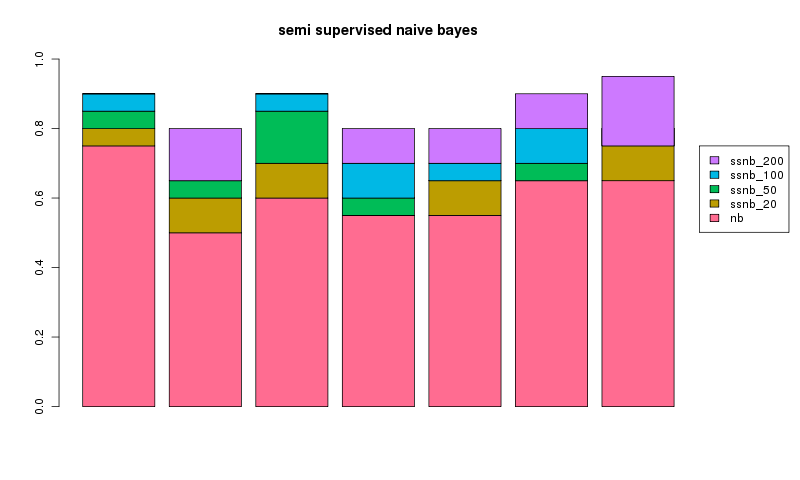

<< semi supervised naive bayes index
as a test i took a random sample of 300 rss articles from a total of 8000. there was roughly a 50/50 split of articles between perez hilton and the register.
they were partitioned into 3 sets...
| article set | number articles |
| labelled training | 30 |
| labelled test | 30 |
| unlabelled training | 240 |
a standard naive bayes classifier was training using the labelled training set and evaluated for correctness using the labelled test set.
a semi supervised naive bayes classifier was trained with both the labelled training and unlabelled training sets using the scheme we've been discussing.correctness was again evaluated using the labelled test set.
the experiment was repeated 7 times for a different random 300 articles with the results plotted below showing the addition gain over naive bayes (nb) using a semi supervised version (ssnb) with 20, 50, 100 or 200 unlabelled examples.

in every case we can see having the adding additional unlablled data makes an improvement. yay! it's interesting that, for run 1 and 3, 200 unlabelled examples did no better than 100 unlabelled examples. in general, seems semi supervised works pretty well!
all the code is on github and feel free to check out other stuff i've done